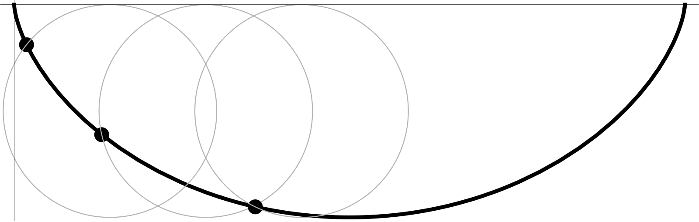
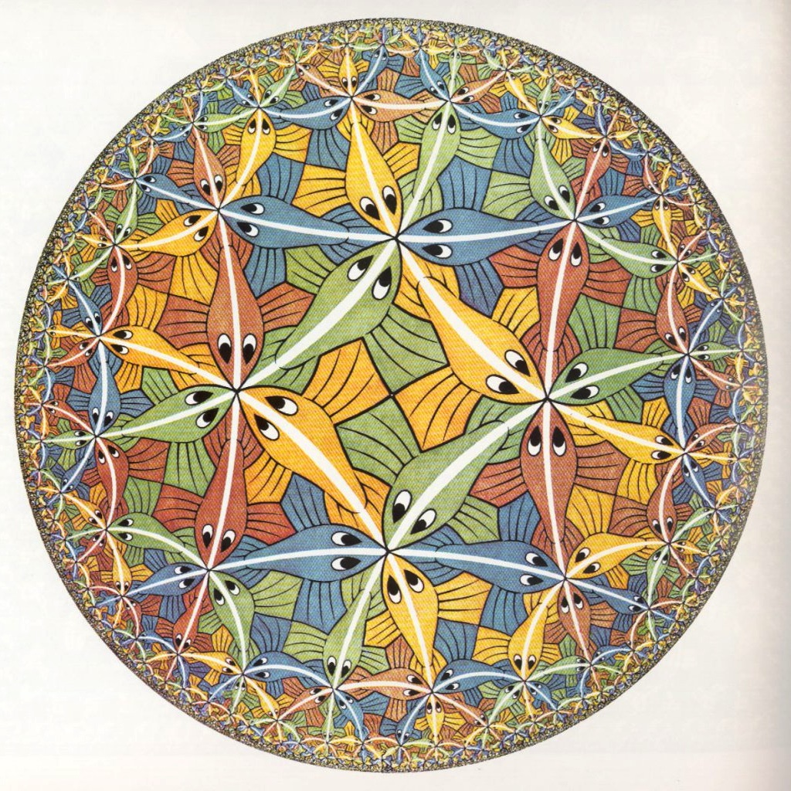
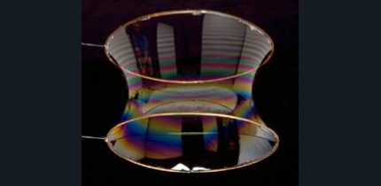

Let us consider the problem of minimizing the action in slightly greater generality. In many areas of mathematics we encounter expressions of the form
which take a (sufficiently smooth) function $q(t)$ defined on an interval $[t_0,t_1]$ and return a real number. The form of the integrand $L(\dot{q},q,t)$ depends on the problem, and may have nothing to do with Lagrangian mechanics (indeed, in many problems with a geometric flavor, $t$ represents a space variable instead of a time variable, and is therefore often denoted by $x$; in this case, we write $q'$ instead of $\dot{q}$ for the derivative of $q$). Usually the function $q$ is assumed to take specific values at the ends of the interval, i.e., $q(t_0)=q_0$ and $q(t_1)=q_1$.
Such a mapping $q\mapsto \Phi(q)$ is called a functional --- note that a functional is just like an ordinary function from calculus, except that it takes as its argument an entire function instead of only one or several real-valued arguments (that is why we call such functions functionals, to avoid an obvious source of confusion). In many cases it is desirable to find which function $q$ results in the least and/or the greatest value $\Phi(q)$. Such a minimization or maximization problem is known as a variational problem (the reason for the name is explained below), and the area of mathematics that deals with such problems is called the variational calculus, or calculus of variations. In more advanced variational problems the form of the functional (14) can be more general and depend for example on a vector-valued function $\mathbf{q}(t)$, or on higher-order derivatives of $q$, or on a function $q(x_1,\ldots,x_k)$ of several variables
Here are some examples of variational problems.
What is the shortest curve in the plane connecting two points? We all know it is a straight line, but how can we prove it? (And how do we find the answer to the same question on some complicated surface?)
What is the curve of given length in the plane bounding the largest area? (It is a circle --- this fact, which is not trivial to prove, is known as the isoperimetric inequality.)
What is the curve connecting a point $\mathbf{A}$ in the plane with another lower point $\mathbf{B}$ such that a ball rolling downhill without friction along the curve from $\mathbf{A}$ to $\mathbf{B}$ under the influence of gravity will reach $\mathbf{B}$ in the minimal possible time? This problem is known as the brachistochrone problem, and stimulated the development of the calculus of variations in the 18th century.
What is the curve in the phase space of a Lagrangian system that minimizes the action?
The basic idea involved in solving variational problems is as follows: if $q$ is an extremum (minimum or maximum) point of the functional $\Phi$, then it is also a local extremum. That means that for any (sufficiently smooth) function $h:[t_0,t_1]\to \R$ satisfying $h(t_0)=h(t_1)=0$, the function
(an ordinary function of a single real variable $s$) has a local extremum at $s=0$. From ordinary calculus, we know that the derivative of $\phi_{q,h}$ at $0$ must be $0$:
To evaluate this derivative, differentiate under the integral sign and integrate by parts, to get
This brings us to an important definition. We denote
and call this quantity the variation of the functional $\Phi$ at $q$, evaluated at $h$ (also sometimes called the first variation of $\Phi$, since there is also a second variation, third variation etc., which we will not discuss; this is where the name calculus of variations comes from). It is analogous to a directional derivative $\frac{\partial f}{\partial \mathbf{u}} = \nabla f \cdot \mathbf{u}$ of a function of several variables in calculus, in that it measures the instantaneous rate of change of $\Phi$ if we start from the "point" $q$ and head off in a "direction" corresponding to the small perturbation $s\cdot h$. We say that the function $q$ is a stationary point of $\Phi$ if $\delta\Phi_q(h) = 0$ for any (sufficiently smooth) function $h$ satisfying $h(t_0)=h(t_1)=0$. With the computation above, we have proved:
If $q$ is an extremum (minimum or maximum) of the functional $\Phi$, then it is a stationary point.
Finally, note that the formula for the variation $\delta \Phi_q(h)$ involves a quantity that is suspiciously reminiscent of the Euler-Langrange equation. Indeed, we can now easily prove:
The function $q$ is a stationary point of $\Phi$ if and only if it satisfies the Euler-Lagrange equation
ProofIt is easy to see that the integral on the right-hand side of (15) is $0$ for every $h$ satisfying $h(t_0)=h(t_1)=0$ if and only if the quantity in parentheses in the integrand vanishes for all $t$.A$\square$
Reformulating this result in the language of Lagrangian systems gives the correct version of the principle of least action.
Principle of stationary actionGiven a mechanical system defined by a Lagrangian $L$, the trajectory of the system between two times $t_1<t_2$ satisfying $q(t_0)=q_0$ and $q(t_1)=q_1$ is a stationary point of the action functional
The stationary point which solves the Euler-Lagrange equation will usually be a minimum point for simple systems, but in general does not have to be. There is a method for determining whether a given stationary point is a minimum, maximum, or saddle point, which involves computing the second variation of the functional (analogous to the Hessian matrix of second derivatives of a function of several variables), but we will not discuss it here.
Let us see how the theory works in a few examples to solve some interesting variational problems.
Plane geodesicsConsider the problem of determining the shortest line between two points $(x_1,y_1)$ and $(x_2,y_2)$, where we assume for concreteness that $x_1<x_2$ (The shortest line between two points on a general surface or curved space is known as a geodesic.) As is well-known from the arc length formula $ds^2=dx^2+dy^2$ from calculus, the length of a curve $y=q(x)$ is given by
where the "Lagrangian" is given by
To find the minimizing curve, we write the Euler-Lagrange equation:
The solution is
which is equivalent to $q'(x)=\textrm{const}$, i.e., we have recovered the equation for a straight line $y=ax+b$.
Brachistochrone problemIn this problem, we try to find the curve connecting the points $\mathbf{A}$ and $\mathbf{B}$ in the plane, for which a ball rolling downhill without friction from $\mathbf{A}$ to $\mathbf{B}$, with an initial velocity of $0$, will take the shortest time to arrive. We choose a coordinate system such that the $x$-axis is the vertical axis and points downward for positive $x$, and such that $\mathbf{A}=(0,0)$, $\mathbf{B}=(x_b,y_b)$ with $x_b,y_b>0$. If the curve is given by $y=q(x)$, the time is given by the integral along the curve
where $ds$ is the arc length element and $v$ is the velocity of the ball at each point. More explicitly, we have $ds = \sqrt{1+q'(x)^2}\,dx$, and $v=\sqrt{2g x}$, where $g$ is the gravitational constant (this follows from conservation of energy, which gives the relation $\tfrac12 m v^2 = mgx$). So, the functional we are trying to minimize is
where
The Euler-Lagrange equation in this case becomes
which therefore gives
where $\alpha$ is a constant. This can be rewritten as
where $\lambda=(2\alpha^2 g)^{-1}$, and then solved by solving for $q'$ and integrating, giving the expression
Setting $a=\lambda/2$ and using the trigonometric substitution
we obtain a convenient parametric representation for the curve, namely
These are the equations for a cycloid (or, rather, an inverted cycloid, as the cycloid is usually drawn with its "flat" side up): as can be seen easily from the parametric equations, it describes the trajectory of a point on a wheel that rolls along the $y$-axis (the parameter $\theta$ represents the angle by which the wheel has rolled forward; see Figure 2). The scaling constant $a$ can now be chosen to fit the condition that $q(x_b)=y_b$, i.e., the curve must pass through the point $\mathbf{B}$. It may also be verified using (16) that the nonparametric equation for the cycloid is
Find a formula for the time it takes a ball rolling down a brachistochrone curve to get to the lowest point on the curve.
Show that the inverted cycloid is also a tautochrone curve, i.e., it has the property that a ball placed on the curve and allowed to roll downhill and then up repeatedly would undergo an oscillatory motion whose period is independent of the ball's initial position along the curve. (This fact was discovered by Christiaan Huygens, the famous 17th century Dutch mathematician and astronomer. Huygens, who invented the pendulum clock, was aware that the period of a pendulum does depend on its amplitude of oscillation --- a fact which limits its accuracy for timekeeping applications --- and tried unsuccessfully to design a more accurate modified pendulum clock based on the tautochrone curve.)

Geodesics in the hyperbolic planeThe hyperbolic plane is a well-known example of a non-Euclidean geometry, i.e., a geometry in which Euclid's parallel postulate fails to hold. A concrete realization of the hyperbolic plane consists of the set
(known as the upper half plane in complex analysis), together with a modified formula for the arc length of a line segment, namely
which replaces the usual formula $ds = \sqrt{dx^2+dy^2}$ for the ordinary Euclidean arc length. In other words, in the hyperbolic plane, the higher you go, the more "flat" in the vertical direction your hyperbolic length measurement becomes, in the sense that you need to traverse $y$ units of ordinary Euclidean distance for each unit of hyperbolic arc length.
(The hyperbolic plane can also be realized inside a unit disk, resulting in a geometry in which objects seem to shrink --- to our Euclidean eyes --- as they approach the boundary of the disk. This geometry was famously portrayed by the Dutch artist M. C. Escher in a beautiful series of wood engravings; see Figure 3.)

Let us use the methods of the calculus of variations to find the hyperbolic geodesics, which are the "straight lines" (actually shortest paths) between two points $(x_1,y_1), (x_2,y_2)$ in the hyperbolic plane. Imitating the setup of the plane geodesics example, we are trying to minimize the functional
which is expressed in terms of a Lagrangian
The Euler-Lagrange equation becomes
After a short computation, this reduces to the equation
or
This is readily integrated, to give
or
where $D=a^2-b^2, C=2b$. The equation $y=q(x)$ is the equation for a semicircular arc that crosses the $y$-axis perpendicularly --- these semicircular arcs are the geodesics in the hyperbolic plane. In addition, in the case when $x_1=x_2$, it is easy to verify that the geodesic connecting $(x_1,y_1)$ to $(x_2,y_2)$ will be a vertical straight line. (In the "unit disk" version of the hyperbolic plane, the geodesics are circular arcs that intersect the boundary of the disk perpendicularly.)
Find a formula for the length (as measured using the hyperbolic metric!) of a hyperbolic geodesic arc between the points $(x_1,y_1), (x_2,y_2)\in \mathbb{H}$.
Isoperimetric inequalityThe isoperimetric problem was the classical problem, discussed already by the ancient Greeks, of finding the simple closed curve in the plane with perimeter $L$ that bounds the largest area (in modern times the problem has been considerably generalized to higher dimensions, curved spaces etc.). The answer is that the so-called isoperimetric curve is a circle, and can be derived using the calculus of variations. A slight complication is that the problem involves minimizing a functional (the area bounded by the curve) subject to a constraint (representing the fixed perimeter); this difficulty can be addressed easily using the standard idea of Lagrange multipliers from "ordinary" calculus (note the repeated occurrence of the mathematician Joseph Louis Lagrange's name --- it is no coincidence, of course).
We model the isoperimetric problem as the problem of minimizing the area functional
among all curves $q(x)$ taking nonnegative values on $[x_0,x_1]$, and satisfying $q(x_0)=q(x_1)=0$ as well as the arc length constraint
Such a curve $q(x)$ represents the "upper part" of the closed curve that lies above the $x$-axis, and meets it at the points $x=x_0, x=x_1$. The solution should be a semicircle meeting the $x$-axis perpendicularly at those points; once this fact is derived, one can derive the claim about circles being the solution to the isoperimetric problem without too much effort, after making reasonable assumptions about the form of the solution.
Since this is an optimization problem under constraints, the technique of Lagrange multipliers requires us to solve the modified non-constrained problem of optimizing the functional
where $L_\lambda$ is a new Lagrangian that is obtained by taking the "original" Lagrangian $L=q$ and adding a constant multiple of the constraint function $\sqrt{1+q'^2}$. The price of replacing the constrained problem by an unconstrained one is the introduction of an additional parameter, $\lambda$, known as the Lagrange multiplier. After solving the unconstrained problem in terms of the parameter $\lambda$, the requirement for the constraint to be satisfied gives an equation for $\lambda$. (A proof that this technique works is beyond the scope of this course, but the geometric intuition is very similar to the case of Lagrange multipliers in ordinary calculus.)
To see how this idea works in practice, we write the Euler-Lagrange equation $\frac{d}{dx}\left(\frac{\partial L_\lambda}{\partial q'}\right) = \frac{\partial L_\lambda}{\partial q}$ for the unconstrained optimization problem. This gives
or
where $A,B$ are constants related to the values of $\lambda$ and an integration constant. Solving for $q'$ and then integrating, we get
where $C,D,E$ are constants. If we now impose the constraints that $q$ is nonnegative, $q(x_0)=q(x_1)=0$, and assume that the arc length $\ell$ is exactly $\frac{\pi}{2}(x_1-x_0)$, we find that the solution to our optimization problem must have the form
which is indeed a semicircular arc that meets the $x$-axis perpendicularly at $x_0,x_1$.
The surface obtained by taking a curve $y=q(x)$ on some interval $[x_1,x_2]$ and rotating it around the $x$-axis is called the surface of revolution of the curve. Its surface area is known to be
For given values of $x_1<x_2$ and boundary values $q(x_1)=y_1, q(x_2)=y_2$, find the nonnegative curve that minimizes $S$. The surface of revolution of this famous curve can be physically realized as the shape of a soap film between two circular metal rings (see Figure 4).

A rope of length $L$ and uniform linear density $\rho$ hangs between two points $\mathbf{A}=(x_1,y_1)$, $\mathbf{B}=(x_2,y_2)$, where $x_1<x_2$, and clearly we have to assume that $(x_2-x_1)^2+(y_2-y_1)^2 \le L^2$. Its shape is determined by the requirement that the potential energy
is minimized. Find the general equation for the shape.
The elastic rodA thin elastic rod of length $L$ is made to bend as it is clamped horizontally between the two points $(0,0)$ and $(A,0)$ (where $A<L$). Its shape can be determined from the condition that the elastic energy is minimized. The energy is proportional to an integral along the curve of the square of its curvature:
where $J$ is a constant characteristic of the material and geometric cross section of the rod, and $ds$ denotes arc length. The curvature $\kappa(s)$ at a point along the curve is the reciprocal of the radius of curvature, defined as the radius of a circle that can be brought to touch the curve tangentially in such a way that both the first and second derivatives of the curve and circle coincide.
Let the shape of the rod be described by the functions $(x(s), y(s))$ of the arc length parameter $s$, which varies from $0$ to $L$. Let $\theta=\theta(s)$ be the angle between the positive $x$-axis and the tangent to the curve at the point $(x(s),y(s))$; i.e., we have the relations
From elementary geometry it is known that $\kappa(s) = |\frac{d\theta}{ds}|$, i.e., the curvature is the absolute rate of change of the angle of the tangent with arc length [it is also the magnitude of the acceleration vector $(x"(s),y"(s))$]. So, in terms of the angle-arc-length functional representation $\theta(s)$ of the curve, the energy functional can be written as
To derive an ODE for this minimization problem, note that the boundary conditions
translate to two constraints
In addition, we have the condition $\theta(0)=\theta(L)=0$. We therefore need to introduce two Lagrange multipliers $\lambda_1, \lambda_2$, and solve the unconstrained optimization problem for the modified energy functional
This gives the Euler-Lagrange equation
Note that this equation is somewhat similar to the pendulum equation (12), and indeed can be brought to the form of (12) by replacing the function $\theta(s)$ by a shifted version of it $\varphi(s)=\theta(s)+\alpha$, for a suitable $\alpha$. The curves solving (17) are known as elastica curves, and this useful coincidence between the elastica equation and the theory of the pendulum is the starting point for a beautiful analysis of the possible shapes that can be assumed by an elastic rod. We will not go into the details of this analysis here.
The air resistance experienced by a bullet, whose shape is the solid of revolution of a curve $y=q(x)$, moving through the air is
where $\rho$ is the density of the material, $v$ is the velocity of motion and $L$ is the length of the body of the bullet. Find the optimal shape $q(x)$ that results in the smallest resistance, subject to the conditions $q(0)=0, q(L)=R$.